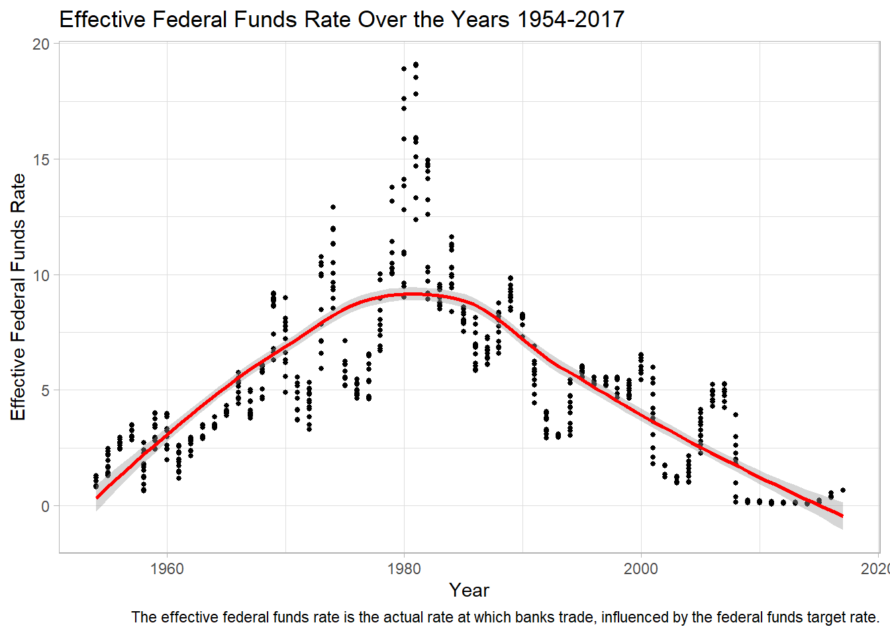
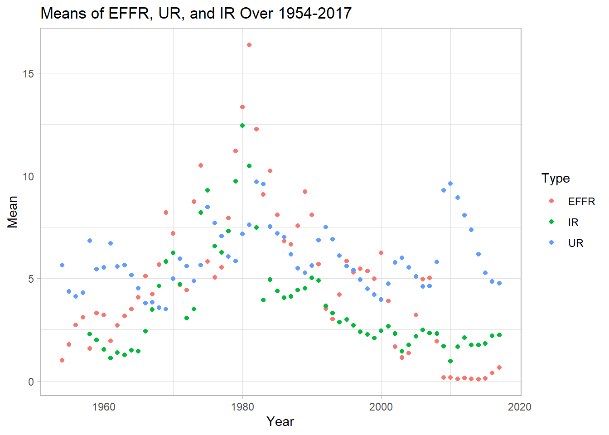
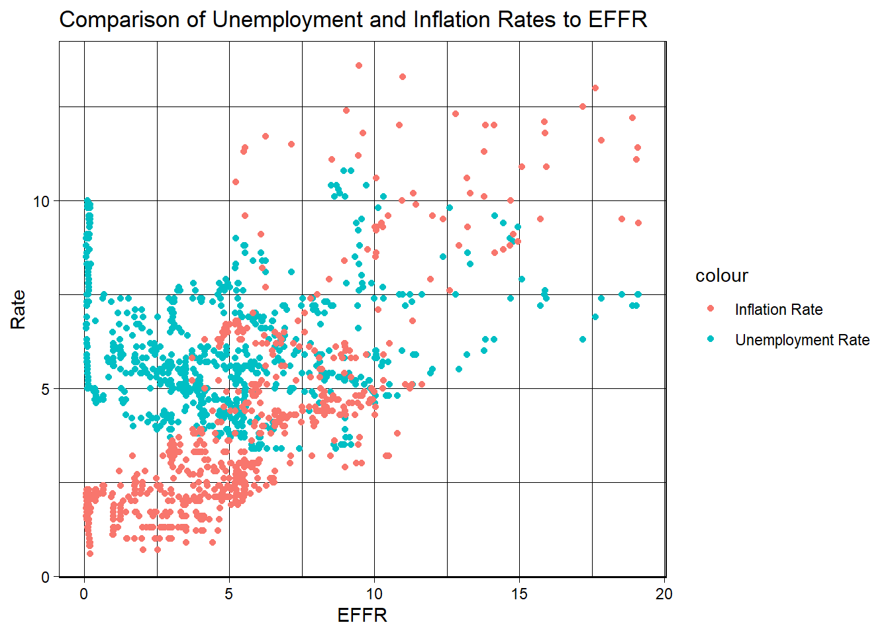

| Year | Month | Day | Federal.Funds.Target.Rate | Federal.Funds.Upper.Target | Federal.Funds.Lower.Target | Effective.Federal.Funds.Rate | Real.GDP..Percent.Change. | Unemployment.Rate | Inflation.Rate |
|---|---|---|---|---|---|---|---|---|---|
| 1954 | 7 | 1 | NA | NA | NA | 0.80 | 4.6 | 5.8 | NA |
| 1954 | 8 | 1 | NA | NA | NA | 1.22 | NA | 6.0 | NA |
| 1954 | 9 | 1 | NA | NA | NA | 1.06 | NA | 6.1 | NA |
| 1954 | 10 | 1 | NA | NA | NA | 0.85 | 8.0 | 5.7 | NA |
| 1954 | 11 | 1 | NA | NA | NA | 0.83 | NA | 5.3 | NA |
| 1954 | 12 | 1 | NA | NA | NA | 1.28 | NA | 5.0 | NA |
Challenge 4
We are going to look at the data set for the federal funds rate in this challenge. Let us load a preview of the raw data.
The first six rows of our data show we are dealing with ten variables. Let’s find the type of variable and how many total rows of data we have.
[1] 904 10'data.frame': 904 obs. of 10 variables:
$ Year : int 1954 1954 1954 1954 1954 1954 1955 1955 1955 1955 ...
$ Month : int 7 8 9 10 11 12 1 2 3 4 ...
$ Day : int 1 1 1 1 1 1 1 1 1 1 ...
$ Federal.Funds.Target.Rate : num NA NA NA NA NA NA NA NA NA NA ...
$ Federal.Funds.Upper.Target : num NA NA NA NA NA NA NA NA NA NA ...
$ Federal.Funds.Lower.Target : num NA NA NA NA NA NA NA NA NA NA ...
$ Effective.Federal.Funds.Rate: num 0.8 1.22 1.06 0.85 0.83 1.28 1.39 1.29 1.35 1.43 ...
$ Real.GDP..Percent.Change. : num 4.6 NA NA 8 NA NA 11.9 NA NA 6.7 ...
$ Unemployment.Rate : num 5.8 6 6.1 5.7 5.3 5 4.9 4.7 4.6 4.7 ...
$ Inflation.Rate : num NA NA NA NA NA NA NA NA NA NA ...Here we see that we have several types of data, as well as a lot of missing data. We see that for some number of rows, we have a lot of missing values. For many years we seem to be missing the target rate while for other years we are missing the upper and lower target. For most years we seem to have the effective federal funds rate, which is the weighted average of interest across bank transactions for the year rather than the target rate the FOMC sets.
| Year | Month | Effective.Federal.Funds.Rate | Real.GDP..Percent.Change. | Unemployment.Rate | Inflation.Rate |
|---|---|---|---|---|---|
| 1954 | 7 | 0.80 | 4.6 | 5.8 | NA |
| 1954 | 8 | 1.22 | NA | 6.0 | NA |
| 1954 | 9 | 1.06 | NA | 6.1 | NA |
| 1954 | 10 | 0.85 | 8.0 | 5.7 | NA |
| 1954 | 11 | 0.83 | NA | 5.3 | NA |
| 1954 | 12 | 1.28 | NA | 5.0 | NA |
| 1955 | 1 | 1.39 | 11.9 | 4.9 | NA |
| 1955 | 2 | 1.29 | NA | 4.7 | NA |
| 1955 | 3 | 1.35 | NA | 4.6 | NA |
| 1955 | 4 | 1.43 | 6.7 | 4.7 | NA |
| 1955 | 5 | 1.43 | NA | 4.3 | NA |
| 1955 | 6 | 1.64 | NA | 4.2 | NA |
| 1955 | 7 | 1.68 | 5.5 | 4.0 | NA |
| 1955 | 8 | 1.96 | NA | 4.2 | NA |
| 1955 | 9 | 2.18 | NA | 4.1 | NA |
| 1955 | 10 | 2.24 | 2.4 | 4.3 | NA |
| 1955 | 11 | 2.35 | NA | 4.2 | NA |
| 1955 | 12 | 2.48 | NA | 4.2 | NA |
| 1956 | 1 | 2.45 | -1.5 | 4.0 | NA |
| 1956 | 2 | 2.50 | NA | 3.9 | NA |
| 1956 | 3 | 2.50 | NA | 4.2 | NA |
| 1956 | 4 | 2.62 | 3.4 | 4.0 | NA |
| 1956 | 5 | 2.75 | NA | 4.3 | NA |
| 1956 | 6 | 2.71 | NA | 4.3 | NA |
| 1956 | 7 | 2.75 | -0.3 | 4.4 | NA |
| 1956 | 8 | 2.73 | NA | 4.1 | NA |
| 1956 | 9 | 2.95 | NA | 3.9 | NA |
| 1956 | 10 | 2.96 | 6.7 | 3.9 | NA |
| 1956 | 11 | 2.88 | NA | 4.3 | NA |
| 1956 | 12 | 2.94 | NA | 4.2 | NA |
| 1957 | 1 | 2.84 | 2.6 | 4.2 | NA |
| 1957 | 2 | 3.00 | NA | 3.9 | NA |
| 1957 | 3 | 2.96 | NA | 3.7 | NA |
| 1957 | 4 | 3.00 | -0.9 | 3.9 | NA |
| 1957 | 5 | 3.00 | NA | 4.1 | NA |
| 1957 | 6 | 3.00 | NA | 4.3 | NA |
| 1957 | 7 | 2.99 | 4.0 | 4.2 | NA |
| 1957 | 8 | 3.24 | NA | 4.1 | NA |
| 1957 | 9 | 3.47 | NA | 4.4 | NA |
| 1957 | 10 | 3.50 | -4.0 | 4.5 | NA |
| 1957 | 11 | 3.28 | NA | 5.1 | NA |
| 1957 | 12 | 2.98 | NA | 5.2 | NA |
| 1958 | 1 | 2.72 | -10.0 | 5.8 | 3.2 |
| 1958 | 2 | 1.67 | NA | 6.4 | 3.2 |
| 1958 | 3 | 1.20 | NA | 6.7 | 2.8 |
| 1958 | 4 | 1.26 | 2.6 | 7.4 | 2.4 |
| 1958 | 5 | 0.63 | NA | 7.4 | 2.4 |
| 1958 | 6 | 0.93 | NA | 7.3 | 2.1 |
| 1958 | 7 | 0.68 | 9.6 | 7.5 | 2.4 |
| 1958 | 8 | 1.53 | NA | 7.4 | 2.1 |
| 1958 | 9 | 1.76 | NA | 7.1 | 1.7 |
| 1958 | 10 | 1.80 | 9.7 | 6.7 | 1.7 |
| 1958 | 11 | 2.27 | NA | 6.2 | 1.7 |
| 1958 | 12 | 2.42 | NA | 6.2 | 1.7 |
| 1959 | 1 | 2.48 | 7.7 | 6.0 | 1.7 |
| 1959 | 2 | 2.43 | NA | 5.9 | 1.7 |
| 1959 | 3 | 2.80 | NA | 5.6 | 1.7 |
| 1959 | 4 | 2.96 | 10.1 | 5.2 | 1.7 |
| 1959 | 5 | 2.90 | NA | 5.1 | 2.0 |
| 1959 | 6 | 3.39 | NA | 5.0 | 2.0 |
| 1959 | 7 | 3.47 | -0.8 | 5.1 | 2.0 |
| 1959 | 8 | 3.50 | NA | 5.2 | 2.0 |
| 1959 | 9 | 3.76 | NA | 5.5 | 2.4 |
| 1959 | 10 | 3.98 | 1.6 | 5.7 | 2.7 |
| 1959 | 11 | 4.00 | NA | 5.8 | 2.0 |
| 1959 | 12 | 3.99 | NA | 5.3 | 2.0 |
| 1960 | 1 | 3.99 | 9.2 | 5.2 | 2.0 |
| 1960 | 2 | 3.97 | NA | 4.8 | 2.3 |
| 1960 | 3 | 3.84 | NA | 5.4 | 2.0 |
| 1960 | 4 | 3.92 | -1.5 | 5.2 | 2.0 |
| 1960 | 5 | 3.85 | NA | 5.1 | 1.7 |
| 1960 | 6 | 3.32 | NA | 5.4 | 1.7 |
| 1960 | 7 | 3.23 | 1.0 | 5.5 | 1.3 |
| 1960 | 8 | 2.98 | NA | 5.6 | 1.3 |
| 1960 | 9 | 2.60 | NA | 5.5 | 1.0 |
| 1960 | 10 | 2.47 | -4.8 | 6.1 | 1.0 |
| 1960 | 11 | 2.44 | NA | 6.1 | 1.0 |
| 1960 | 12 | 1.98 | NA | 6.6 | 1.0 |
| 1961 | 1 | 1.45 | 2.7 | 6.6 | 1.0 |
| 1961 | 2 | 2.54 | NA | 6.9 | 0.7 |
| 1961 | 3 | 2.02 | NA | 6.9 | 0.7 |
| 1961 | 4 | 1.49 | 7.6 | 7.0 | 1.0 |
| 1961 | 5 | 1.98 | NA | 7.1 | 1.0 |
| 1961 | 6 | 1.73 | NA | 6.9 | 1.0 |
| 1961 | 7 | 1.17 | 6.8 | 7.0 | 1.3 |
| 1961 | 8 | 2.00 | NA | 6.6 | 1.3 |
| 1961 | 9 | 1.88 | NA | 6.7 | 1.6 |
| 1961 | 10 | 2.26 | 8.3 | 6.5 | 1.3 |
| 1961 | 11 | 2.61 | NA | 6.1 | 1.3 |
| 1961 | 12 | 2.33 | NA | 6.0 | 1.3 |
| 1962 | 1 | 2.15 | 7.4 | 5.8 | 1.3 |
| 1962 | 2 | 2.37 | NA | 5.5 | 1.3 |
| 1962 | 3 | 2.85 | NA | 5.6 | 1.6 |
| 1962 | 4 | 2.78 | 4.4 | 5.6 | 1.3 |
| 1962 | 5 | 2.36 | NA | 5.5 | 1.6 |
| 1962 | 6 | 2.68 | NA | 5.5 | 1.6 |
| 1962 | 7 | 2.71 | 3.9 | 5.4 | 1.3 |
| 1962 | 8 | 2.93 | NA | 5.7 | 1.3 |
| 1962 | 9 | 2.90 | NA | 5.6 | 1.3 |
| 1962 | 10 | 2.90 | 1.6 | 5.4 | 1.3 |
| 1962 | 11 | 2.94 | NA | 5.7 | 1.3 |
| 1962 | 12 | 2.93 | NA | 5.5 | 1.3 |
| 1963 | 1 | 2.92 | 4.5 | 5.7 | 1.0 |
| 1963 | 2 | 3.00 | NA | 5.9 | 1.0 |
| 1963 | 3 | 2.98 | NA | 5.7 | 1.0 |
| 1963 | 4 | 2.90 | 5.3 | 5.7 | 1.3 |
| 1963 | 5 | 3.00 | NA | 5.9 | 1.0 |
| 1963 | 6 | 2.99 | NA | 5.6 | 1.3 |
| 1963 | 7 | 3.02 | 8.0 | 5.6 | 1.3 |
| 1963 | 8 | 3.49 | NA | 5.4 | 1.6 |
| 1963 | 9 | 3.48 | NA | 5.5 | 1.3 |
| 1963 | 10 | 3.50 | 2.9 | 5.5 | 1.3 |
| 1963 | 11 | 3.48 | NA | 5.7 | 1.6 |
| 1963 | 12 | 3.38 | NA | 5.5 | 1.6 |
| 1964 | 1 | 3.48 | 8.9 | 5.6 | 1.9 |
| 1964 | 2 | 3.48 | NA | 5.4 | 1.9 |
| 1964 | 3 | 3.43 | NA | 5.4 | 1.9 |
| 1964 | 4 | 3.47 | 4.8 | 5.3 | 1.6 |
| 1964 | 5 | 3.50 | NA | 5.1 | 1.6 |
| 1964 | 6 | 3.50 | NA | 5.2 | 1.6 |
| 1964 | 7 | 3.42 | 5.5 | 4.9 | 1.6 |
| 1964 | 8 | 3.50 | NA | 5.0 | 0.9 |
| 1964 | 9 | 3.45 | NA | 5.1 | 1.3 |
| 1964 | 10 | 3.36 | 1.4 | 5.1 | 1.3 |
| 1964 | 11 | 3.52 | NA | 4.8 | 1.2 |
| 1964 | 12 | 3.85 | NA | 5.0 | 1.2 |
| 1965 | 1 | 3.90 | 10.2 | 4.9 | 1.6 |
| 1965 | 2 | 3.98 | NA | 5.1 | 1.6 |
| 1965 | 3 | 4.04 | NA | 4.7 | 1.2 |
| 1965 | 4 | 4.09 | 5.6 | 4.8 | 1.6 |
| 1965 | 5 | 4.10 | NA | 4.6 | 1.6 |
| 1965 | 6 | 4.04 | NA | 4.6 | 1.2 |
| 1965 | 7 | 4.09 | 8.4 | 4.4 | 1.2 |
| 1965 | 8 | 4.12 | NA | 4.4 | 1.6 |
| 1965 | 9 | 4.01 | NA | 4.3 | 1.5 |
| 1965 | 10 | 4.08 | 9.8 | 4.2 | 1.5 |
| 1965 | 11 | 4.10 | NA | 4.1 | 1.2 |
| 1965 | 12 | 4.32 | NA | 4.0 | 1.5 |
| 1966 | 1 | 4.42 | 10.2 | 4.0 | 0.9 |
| 1966 | 2 | 4.60 | NA | 3.8 | 1.2 |
| 1966 | 3 | 4.65 | NA | 3.8 | 1.5 |
| 1966 | 4 | 4.67 | 1.6 | 3.8 | 1.8 |
| 1966 | 5 | 4.90 | NA | 3.9 | 2.1 |
| 1966 | 6 | 5.17 | NA | 3.8 | 2.4 |
| 1966 | 7 | 5.30 | 2.9 | 3.8 | 2.8 |
| 1966 | 8 | 5.53 | NA | 3.8 | 3.1 |
| 1966 | 9 | 5.40 | NA | 3.7 | 3.0 |
| 1966 | 10 | 5.53 | 3.5 | 3.7 | 3.3 |
| 1966 | 11 | 5.76 | NA | 3.6 | 3.6 |
| 1966 | 12 | 5.40 | NA | 3.8 | 3.3 |
| 1967 | 1 | 4.94 | 3.7 | 3.9 | 3.6 |
| 1967 | 2 | 5.00 | NA | 3.8 | 3.6 |
| 1967 | 3 | 4.53 | NA | 3.8 | 3.6 |
| 1967 | 4 | 4.05 | 0.3 | 3.8 | 3.3 |
| 1967 | 5 | 3.94 | NA | 3.8 | 3.3 |
| 1967 | 6 | 3.98 | NA | 3.9 | 3.3 |
| 1967 | 7 | 3.79 | 3.5 | 3.8 | 3.3 |
| 1967 | 8 | 3.90 | NA | 3.8 | 3.3 |
| 1967 | 9 | 3.99 | NA | 3.8 | 3.6 |
| 1967 | 10 | 3.88 | 3.2 | 4.0 | 3.5 |
| 1967 | 11 | 4.13 | NA | 3.9 | 3.5 |
| 1967 | 12 | 4.51 | NA | 3.8 | 3.8 |
| 1968 | 1 | 4.60 | 8.4 | 3.7 | 4.1 |
| 1968 | 2 | 4.71 | NA | 3.8 | 4.1 |
| 1968 | 3 | 5.05 | NA | 3.7 | 4.4 |
| 1968 | 4 | 5.76 | 6.9 | 3.5 | 4.4 |
| 1968 | 5 | 6.11 | NA | 3.5 | 4.3 |
| 1968 | 6 | 6.07 | NA | 3.7 | 4.6 |
| 1968 | 7 | 6.02 | 2.9 | 3.7 | 4.9 |
| 1968 | 8 | 6.03 | NA | 3.5 | 4.9 |
| 1968 | 9 | 5.78 | NA | 3.4 | 4.9 |
| 1968 | 10 | 5.91 | 1.8 | 3.4 | 4.8 |
| 1968 | 11 | 5.82 | NA | 3.4 | 5.1 |
| 1968 | 12 | 6.02 | NA | 3.4 | 5.1 |
| 1969 | 1 | 6.30 | 6.4 | 3.4 | 5.1 |
| 1969 | 2 | 6.61 | NA | 3.4 | 5.3 |
| 1969 | 3 | 6.79 | NA | 3.4 | 5.6 |
| 1969 | 4 | 7.41 | 1.3 | 3.4 | 6.1 |
| 1969 | 5 | 8.67 | NA | 3.4 | 6.1 |
| 1969 | 6 | 8.90 | NA | 3.5 | 5.8 |
| 1969 | 7 | 8.61 | 2.5 | 3.5 | 5.8 |
| 1969 | 8 | 9.19 | NA | 3.5 | 5.8 |
| 1969 | 9 | 9.15 | NA | 3.7 | 6.0 |
| 1969 | 10 | 9.00 | -1.7 | 3.7 | 6.0 |
| 1969 | 11 | 8.85 | NA | 3.5 | 5.9 |
| 1969 | 12 | 8.97 | NA | 3.5 | 6.2 |
| 1970 | 1 | 8.98 | -0.7 | 3.9 | 6.2 |
| 1970 | 2 | 8.98 | NA | 4.2 | 6.1 |
| 1970 | 3 | 7.76 | NA | 4.4 | 6.1 |
| 1970 | 4 | 8.10 | 0.7 | 4.6 | 5.8 |
| 1970 | 5 | 7.94 | NA | 4.8 | 6.0 |
| 1970 | 6 | 7.60 | NA | 4.9 | 6.5 |
| 1970 | 7 | 7.21 | 3.6 | 5.0 | 6.2 |
| 1970 | 8 | 6.61 | NA | 5.1 | 6.2 |
| 1970 | 9 | 6.29 | NA | 5.4 | 6.2 |
| 1970 | 10 | 6.20 | -4.0 | 5.5 | 6.4 |
| 1970 | 11 | 5.60 | NA | 5.9 | 6.6 |
| 1970 | 12 | 4.90 | NA | 6.1 | 6.6 |
| 1971 | 1 | 4.14 | 11.1 | 5.9 | 6.3 |
| 1971 | 2 | 3.72 | NA | 5.9 | 5.8 |
| 1971 | 3 | 3.71 | NA | 6.0 | 5.2 |
| 1971 | 4 | 4.15 | 2.3 | 5.9 | 5.0 |
| 1971 | 5 | 4.63 | NA | 5.9 | 5.2 |
| 1971 | 6 | 4.91 | NA | 5.9 | 4.9 |
| 1971 | 7 | 5.31 | 3.2 | 6.0 | 4.9 |
| 1971 | 8 | 5.56 | NA | 6.1 | 4.6 |
| 1971 | 9 | 5.55 | NA | 6.0 | 4.4 |
| 1971 | 10 | 5.20 | 1.2 | 5.8 | 3.8 |
| 1971 | 11 | 4.91 | NA | 6.0 | 3.3 |
| 1971 | 12 | 4.14 | NA | 6.0 | 3.1 |
| 1972 | 1 | 3.50 | 7.4 | 5.8 | 3.1 |
| 1972 | 2 | 3.29 | NA | 5.7 | 3.3 |
| 1972 | 3 | 3.83 | NA | 5.8 | 3.3 |
| 1972 | 4 | 4.17 | 9.6 | 5.7 | 3.3 |
| 1972 | 5 | 4.27 | NA | 5.7 | 3.1 |
| 1972 | 6 | 4.46 | NA | 5.7 | 2.8 |
| 1972 | 7 | 4.55 | 3.7 | 5.6 | 2.8 |
| 1972 | 8 | 4.80 | NA | 5.6 | 3.3 |
| 1972 | 9 | 4.87 | NA | 5.5 | 2.8 |
| 1972 | 10 | 5.04 | 6.8 | 5.6 | 3.0 |
| 1972 | 11 | 5.06 | NA | 5.3 | 3.0 |
| 1972 | 12 | 5.33 | NA | 5.2 | 3.0 |
| 1973 | 1 | 5.94 | 10.2 | 4.9 | 2.8 |
| 1973 | 2 | 6.58 | NA | 5.0 | 2.8 |
| 1973 | 3 | 7.09 | NA | 4.9 | 3.0 |
| 1973 | 4 | 7.12 | 4.6 | 5.0 | 3.2 |
| 1973 | 5 | 7.84 | NA | 4.9 | 3.2 |
| 1973 | 6 | 8.49 | NA | 4.9 | 3.2 |
| 1973 | 7 | 10.40 | -2.2 | 4.8 | 3.2 |
| 1973 | 8 | 10.50 | NA | 4.8 | 3.2 |
| 1973 | 9 | 10.78 | NA | 4.8 | 3.8 |
| 1973 | 10 | 10.01 | 3.8 | 4.6 | 4.3 |
| 1973 | 11 | 10.03 | NA | 4.8 | 4.5 |
| 1973 | 12 | 9.95 | NA | 4.9 | 4.7 |
| 1974 | 1 | 9.65 | -3.3 | 5.1 | 4.9 |
| 1974 | 2 | 8.97 | NA | 5.2 | 5.4 |
| 1974 | 3 | 9.35 | NA | 5.1 | 5.8 |
| 1974 | 4 | 10.51 | 1.1 | 5.1 | 6.2 |
| 1974 | 5 | 11.31 | NA | 5.1 | 6.8 |
| 1974 | 6 | 11.93 | NA | 5.4 | 7.9 |
| 1974 | 7 | 12.92 | -3.8 | 5.5 | 8.8 |
| 1974 | 8 | 12.01 | NA | 5.5 | 9.6 |
| 1974 | 9 | 11.34 | NA | 5.9 | 10.2 |
| 1974 | 10 | 10.06 | -1.6 | 6.0 | 10.6 |
| 1974 | 11 | 9.45 | NA | 6.6 | 11.2 |
| 1974 | 12 | 8.53 | NA | 7.2 | 11.1 |
| 1975 | 1 | 7.13 | -4.7 | 8.1 | 11.5 |
| 1975 | 2 | 6.24 | NA | 8.1 | 11.7 |
| 1975 | 3 | 5.54 | NA | 8.6 | 11.4 |
| 1975 | 4 | 5.49 | 3.1 | 8.8 | 11.3 |
| 1975 | 5 | 5.22 | NA | 9.0 | 10.5 |
| 1975 | 6 | 5.55 | NA | 8.8 | 9.6 |
| 1975 | 7 | 6.10 | 6.8 | 8.6 | 9.1 |
| 1975 | 8 | 6.14 | NA | 8.4 | 8.2 |
| 1975 | 9 | 6.24 | NA | 8.4 | 7.7 |
| 1975 | 10 | 5.82 | 5.5 | 8.4 | 7.0 |
| 1975 | 11 | 5.22 | NA | 8.3 | 6.8 |
| 1975 | 12 | 5.20 | NA | 8.2 | 6.7 |
| 1976 | 1 | 4.87 | 9.3 | 7.9 | 6.7 |
| 1976 | 2 | 4.77 | NA | 7.7 | 6.5 |
| 1976 | 3 | 4.84 | NA | 7.6 | 6.6 |
| 1976 | 4 | 4.82 | 3.1 | 7.7 | 6.4 |
| 1976 | 5 | 5.29 | NA | 7.4 | 6.5 |
| 1976 | 6 | 5.48 | NA | 7.6 | 6.5 |
| 1976 | 7 | 5.31 | 2.1 | 7.8 | 6.7 |
| 1976 | 8 | 5.29 | NA | 7.8 | 6.8 |
| 1976 | 9 | 5.25 | NA | 7.6 | 6.8 |
| 1976 | 10 | 5.02 | 3.0 | 7.7 | 6.7 |
| 1976 | 11 | 4.95 | NA | 7.8 | 6.5 |
| 1976 | 12 | 4.65 | NA | 7.8 | 6.1 |
| 1977 | 1 | 4.61 | 4.7 | 7.5 | 6.3 |
| 1977 | 2 | 4.68 | NA | 7.6 | 6.3 |
| 1977 | 3 | 4.69 | NA | 7.4 | 6.2 |
| 1977 | 4 | 4.73 | 8.1 | 7.2 | 6.3 |
| 1977 | 5 | 5.35 | NA | 7.0 | 6.3 |
| 1977 | 6 | 5.39 | NA | 7.2 | 6.6 |
| 1977 | 7 | 5.42 | 7.3 | 6.9 | 6.3 |
| 1977 | 8 | 5.90 | NA | 7.0 | 6.2 |
| 1977 | 9 | 6.14 | NA | 6.8 | 6.2 |
| 1977 | 10 | 6.47 | 0.0 | 6.8 | 6.0 |
| 1977 | 11 | 6.51 | NA | 6.8 | 5.9 |
| 1977 | 12 | 6.56 | NA | 6.4 | 6.5 |
| 1978 | 1 | 6.70 | 1.4 | 6.4 | 6.4 |
| 1978 | 2 | 6.78 | NA | 6.3 | 6.2 |
| 1978 | 3 | 6.79 | NA | 6.3 | 6.3 |
| 1978 | 4 | 6.89 | 16.5 | 6.1 | 6.5 |
| 1978 | 5 | 7.36 | NA | 6.0 | 6.8 |
| 1978 | 6 | 7.60 | NA | 5.9 | 7.0 |
| 1978 | 7 | 7.81 | 4.0 | 6.2 | 7.4 |
| 1978 | 8 | 8.04 | NA | 5.9 | 7.5 |
| 1978 | 9 | 8.45 | NA | 6.0 | 7.9 |
| 1978 | 10 | 8.96 | 5.5 | 5.8 | 8.4 |
| 1978 | 11 | 9.76 | NA | 5.9 | 8.7 |
| 1978 | 12 | 10.03 | NA | 6.0 | 8.5 |
| 1979 | 1 | 10.07 | 0.8 | 5.9 | 8.6 |
| 1979 | 2 | 10.06 | NA | 5.9 | 9.2 |
| 1979 | 3 | 10.09 | NA | 5.8 | 9.3 |
| 1979 | 4 | 10.01 | 0.5 | 5.8 | 9.3 |
| 1979 | 5 | 10.24 | NA | 5.6 | 9.4 |
| 1979 | 6 | 10.29 | NA | 5.7 | 9.3 |
| 1979 | 7 | 10.47 | 2.9 | 5.7 | 9.6 |
| 1979 | 8 | 10.94 | NA | 6.0 | 10.0 |
| 1979 | 9 | 11.43 | NA | 5.9 | 9.9 |
| 1979 | 10 | 13.77 | 1.0 | 6.0 | 10.1 |
| 1979 | 11 | 13.18 | NA | 5.9 | 10.6 |
| 1979 | 12 | 13.78 | NA | 6.0 | 11.3 |
| 1980 | 1 | 13.82 | 1.3 | 6.3 | 12.0 |
| 1980 | 2 | 14.13 | NA | 6.3 | 12.0 |
| 1980 | 3 | 17.19 | NA | 6.3 | 12.5 |
| 1980 | 4 | 17.61 | -7.9 | 6.9 | 13.0 |
| 1980 | 5 | 10.98 | NA | 7.5 | 13.3 |
| 1980 | 6 | 9.47 | NA | 7.6 | 13.6 |
| 1980 | 7 | 9.03 | -0.6 | 7.8 | 12.4 |
| 1980 | 8 | 9.61 | NA | 7.7 | 11.8 |
| 1980 | 9 | 10.87 | NA | 7.5 | 12.0 |
| 1980 | 10 | 12.81 | 7.6 | 7.5 | 12.3 |
| 1980 | 11 | 15.85 | NA | 7.5 | 12.1 |
| 1980 | 12 | 18.90 | NA | 7.2 | 12.2 |
| 1981 | 1 | 19.08 | 8.5 | 7.5 | 11.4 |
| 1981 | 2 | 15.93 | NA | 7.4 | 10.9 |
| 1981 | 3 | 14.70 | NA | 7.4 | 10.0 |
| 1981 | 4 | 15.72 | -2.9 | 7.2 | 9.5 |
| 1981 | 5 | 18.52 | NA | 7.5 | 9.5 |
| 1981 | 6 | 19.10 | NA | 7.5 | 9.4 |
| 1981 | 7 | 19.04 | 4.7 | 7.2 | 11.1 |
| 1981 | 8 | 17.82 | NA | 7.4 | 11.6 |
| 1981 | 9 | 15.87 | NA | 7.6 | 11.8 |
| 1981 | 10 | 15.08 | -4.6 | 7.9 | 10.9 |
| 1981 | 11 | 13.31 | NA | 8.3 | 10.2 |
| 1981 | 12 | 12.37 | NA | 8.5 | 9.5 |
| 1982 | 1 | 13.22 | -6.5 | 8.6 | 9.3 |
| 1982 | 2 | 14.78 | NA | 8.9 | 9.1 |
| 1982 | 3 | 14.68 | NA | 9.0 | 8.8 |
| 1982 | 4 | 14.94 | 2.2 | 9.3 | 8.9 |
| 1982 | 5 | 14.45 | NA | 9.4 | 8.7 |
| 1982 | 6 | 14.15 | NA | 9.6 | 8.6 |
| 1982 | 7 | 12.59 | -1.4 | 9.8 | 7.6 |
| 1982 | 8 | 10.12 | NA | 9.8 | 7.1 |
| 1982 | 9 | 10.31 | NA | 10.1 | 5.9 |
| 1982 | 9 | NA | NA | NA | NA |
| 1982 | 10 | 9.71 | 0.4 | 10.4 | 5.9 |
| 1982 | 10 | NA | NA | NA | NA |
| 1982 | 11 | 9.20 | NA | 10.8 | 5.3 |
| 1982 | 11 | NA | NA | NA | NA |
| 1982 | 12 | 8.95 | NA | 10.8 | 4.5 |
| 1982 | 12 | NA | NA | NA | NA |
| 1983 | 1 | 8.68 | 5.3 | 10.4 | 4.7 |
| 1983 | 2 | 8.51 | NA | 10.4 | 4.7 |
| 1983 | 3 | 8.77 | NA | 10.3 | 4.7 |
| 1983 | 3 | NA | NA | NA | NA |
| 1983 | 4 | 8.80 | 9.4 | 10.2 | 4.3 |
| 1983 | 5 | 8.63 | NA | 10.1 | 3.6 |
| 1983 | 5 | NA | NA | NA | NA |
| 1983 | 6 | 8.98 | NA | 10.1 | 2.9 |
| 1983 | 6 | NA | NA | NA | NA |
| 1983 | 7 | 9.37 | 8.1 | 9.4 | 3.0 |
| 1983 | 7 | NA | NA | NA | NA |
| 1983 | 7 | NA | NA | NA | NA |
| 1983 | 8 | 9.56 | NA | 9.5 | 3.0 |
| 1983 | 8 | NA | NA | NA | NA |
| 1983 | 8 | NA | NA | NA | NA |
| 1983 | 9 | 9.45 | NA | 9.2 | 3.5 |
| 1983 | 9 | NA | NA | NA | NA |
| 1983 | 10 | 9.48 | 8.5 | 8.8 | 3.7 |
| 1983 | 11 | 9.34 | NA | 8.5 | 4.3 |
| 1983 | 12 | 9.47 | NA | 8.3 | 4.8 |
| 1984 | 1 | 9.56 | 8.2 | 8.0 | 4.8 |
| 1984 | 2 | 9.59 | NA | 7.8 | 4.8 |
| 1984 | 3 | 9.91 | NA | 7.8 | 5.0 |
| 1984 | 3 | NA | NA | NA | NA |
| 1984 | 4 | 10.29 | 7.2 | 7.7 | 5.0 |
| 1984 | 5 | 10.32 | NA | 7.4 | 5.2 |
| 1984 | 6 | 11.06 | NA | 7.2 | 5.1 |
| 1984 | 7 | 11.23 | 4.0 | 7.5 | 5.0 |
| 1984 | 7 | NA | NA | NA | NA |
| 1984 | 7 | NA | NA | NA | NA |
| 1984 | 8 | 11.64 | NA | 7.5 | 5.1 |
| 1984 | 8 | NA | NA | NA | NA |
| 1984 | 9 | 11.30 | NA | 7.3 | 5.1 |
| 1984 | 9 | NA | NA | NA | NA |
| 1984 | 9 | NA | NA | NA | NA |
| 1984 | 10 | 9.99 | 3.2 | 7.4 | 4.9 |
| 1984 | 10 | NA | NA | NA | NA |
| 1984 | 10 | NA | NA | NA | NA |
| 1984 | 11 | 9.43 | NA | 7.2 | 4.6 |
| 1984 | 11 | NA | NA | NA | NA |
| 1984 | 11 | NA | NA | NA | NA |
| 1984 | 12 | 8.38 | NA | 7.3 | 4.7 |
| 1984 | 12 | NA | NA | NA | NA |
| 1984 | 12 | NA | NA | NA | NA |
| 1984 | 12 | NA | NA | NA | NA |
| 1985 | 1 | 8.35 | 4.0 | 7.3 | 4.5 |
| 1985 | 1 | NA | NA | NA | NA |
| 1985 | 2 | 8.50 | NA | 7.2 | 4.7 |
| 1985 | 2 | NA | NA | NA | NA |
| 1985 | 3 | 8.58 | NA | 7.2 | 4.8 |
| 1985 | 3 | NA | NA | NA | NA |
| 1985 | 4 | 8.27 | 3.7 | 7.3 | 4.5 |
| 1985 | 4 | NA | NA | NA | NA |
| 1985 | 5 | 7.97 | NA | 7.2 | 4.5 |
| 1985 | 5 | NA | NA | NA | NA |
| 1985 | 6 | 7.53 | NA | 7.4 | 4.4 |
| 1985 | 7 | 7.88 | 6.4 | 7.4 | 4.2 |
| 1985 | 7 | NA | NA | NA | NA |
| 1985 | 8 | 7.90 | NA | 7.1 | 4.1 |
| 1985 | 8 | NA | NA | NA | NA |
| 1985 | 9 | 7.92 | NA | 7.1 | 4.0 |
| 1985 | 9 | NA | NA | NA | NA |
| 1985 | 10 | 7.99 | 3.0 | 7.1 | 4.1 |
| 1985 | 11 | 8.05 | NA | 7.0 | 4.4 |
| 1985 | 12 | 8.27 | NA | 7.0 | 4.3 |
| 1985 | 12 | NA | NA | NA | NA |
| 1986 | 1 | 8.14 | 3.8 | 6.7 | 4.4 |
| 1986 | 2 | 7.86 | NA | 7.2 | 4.2 |
| 1986 | 3 | 7.48 | NA | 7.2 | 4.1 |
| 1986 | 3 | NA | NA | NA | NA |
| 1986 | 4 | 6.99 | 1.9 | 7.1 | 4.2 |
| 1986 | 4 | NA | NA | NA | NA |
| 1986 | 4 | NA | NA | NA | NA |
| 1986 | 5 | 6.85 | NA | 7.2 | 4.0 |
| 1986 | 5 | NA | NA | NA | NA |
| 1986 | 6 | 6.92 | NA | 7.2 | 4.0 |
| 1986 | 6 | NA | NA | NA | NA |
| 1986 | 7 | 6.56 | 4.1 | 7.0 | 4.1 |
| 1986 | 7 | NA | NA | NA | NA |
| 1986 | 8 | 6.17 | NA | 6.9 | 4.0 |
| 1986 | 8 | NA | NA | NA | NA |
| 1986 | 9 | 5.89 | NA | 7.0 | 4.1 |
| 1986 | 10 | 5.85 | 2.1 | 7.0 | 4.0 |
| 1986 | 11 | 6.04 | NA | 6.9 | 3.8 |
| 1986 | 12 | 6.91 | NA | 6.6 | 3.8 |
| 1987 | 1 | 6.43 | 2.8 | 6.6 | 3.8 |
| 1987 | 1 | NA | NA | NA | NA |
| 1987 | 2 | 6.10 | NA | 6.6 | 3.8 |
| 1987 | 3 | 6.13 | NA | 6.6 | 4.0 |
| 1987 | 4 | 6.37 | 4.6 | 6.3 | 4.2 |
| 1987 | 4 | NA | NA | NA | NA |
| 1987 | 5 | 6.85 | NA | 6.3 | 4.2 |
| 1987 | 5 | NA | NA | NA | NA |
| 1987 | 6 | 6.73 | NA | 6.2 | 4.1 |
| 1987 | 7 | 6.58 | 3.7 | 6.1 | 4.0 |
| 1987 | 7 | NA | NA | NA | NA |
| 1987 | 8 | 6.73 | NA | 6.0 | 4.2 |
| 1987 | 8 | NA | NA | NA | NA |
| 1987 | 9 | 7.22 | NA | 5.9 | 4.3 |
| 1987 | 9 | NA | NA | NA | NA |
| 1987 | 9 | NA | NA | NA | NA |
| 1987 | 9 | NA | NA | NA | NA |
| 1987 | 10 | 7.29 | 6.8 | 6.0 | 4.3 |
| 1987 | 11 | 6.69 | NA | 5.8 | 4.4 |
| 1987 | 11 | NA | NA | NA | NA |
| 1987 | 12 | 6.77 | NA | 5.7 | 4.2 |
| 1988 | 1 | 6.83 | 2.3 | 5.7 | 4.3 |
| 1988 | 1 | NA | NA | NA | NA |
| 1988 | 2 | 6.58 | NA | 5.7 | 4.3 |
| 1988 | 2 | NA | NA | NA | NA |
| 1988 | 3 | 6.58 | NA | 5.7 | 4.4 |
| 1988 | 3 | NA | NA | NA | NA |
| 1988 | 4 | 6.87 | 5.4 | 5.4 | 4.3 |
| 1988 | 5 | 7.09 | NA | 5.6 | 4.3 |
| 1988 | 5 | NA | NA | NA | NA |
| 1988 | 5 | NA | NA | NA | NA |
| 1988 | 6 | 7.51 | NA | 5.4 | 4.5 |
| 1988 | 6 | NA | NA | NA | NA |
| 1988 | 7 | 7.75 | 2.3 | 5.4 | 4.5 |
| 1988 | 7 | NA | NA | NA | NA |
| 1988 | 8 | 8.01 | NA | 5.6 | 4.4 |
| 1988 | 8 | NA | NA | NA | NA |
| 1988 | 8 | NA | NA | NA | NA |
| 1988 | 9 | 8.19 | NA | 5.4 | 4.4 |
| 1988 | 10 | 8.30 | 5.4 | 5.4 | 4.5 |
| 1988 | 11 | 8.35 | NA | 5.3 | 4.4 |
| 1988 | 11 | NA | NA | NA | NA |
| 1988 | 11 | NA | NA | NA | NA |
| 1988 | 12 | 8.76 | NA | 5.3 | 4.7 |
| 1988 | 12 | NA | NA | NA | NA |
| 1989 | 1 | 9.12 | 4.1 | 5.4 | 4.6 |
| 1989 | 1 | NA | NA | NA | NA |
| 1989 | 2 | 9.36 | NA | 5.2 | 4.8 |
| 1989 | 2 | NA | NA | NA | NA |
| 1989 | 2 | NA | NA | NA | NA |
| 1989 | 2 | NA | NA | NA | NA |
| 1989 | 3 | 9.85 | NA | 5.0 | 4.7 |
| 1989 | 4 | 9.84 | 3.2 | 5.2 | 4.6 |
| 1989 | 5 | 9.81 | NA | 5.2 | 4.6 |
| 1989 | 5 | NA | NA | NA | NA |
| 1989 | 6 | 9.53 | NA | 5.3 | 4.5 |
| 1989 | 6 | NA | NA | NA | NA |
| 1989 | 7 | 9.24 | 3.0 | 5.2 | 4.6 |
| 1989 | 7 | NA | NA | NA | NA |
| 1989 | 7 | NA | NA | NA | NA |
| 1989 | 8 | 8.99 | NA | 5.2 | 4.4 |
| 1989 | 9 | 9.02 | NA | 5.3 | 4.3 |
| 1989 | 10 | 8.84 | 0.9 | 5.3 | 4.3 |
| 1989 | 10 | NA | NA | NA | NA |
| 1989 | 11 | 8.55 | NA | 5.4 | 4.4 |
| 1989 | 11 | NA | NA | NA | NA |
| 1989 | 12 | 8.45 | NA | 5.4 | 4.4 |
| 1989 | 12 | NA | NA | NA | NA |
| 1990 | 1 | 8.23 | 4.5 | 5.4 | 4.4 |
| 1990 | 2 | 8.24 | NA | 5.3 | 4.6 |
| 1990 | 3 | 8.28 | NA | 5.2 | 4.9 |
| 1990 | 4 | 8.26 | 1.6 | 5.4 | 4.8 |
| 1990 | 5 | 8.18 | NA | 5.4 | 4.8 |
| 1990 | 6 | 8.29 | NA | 5.2 | 4.9 |
| 1990 | 7 | 8.15 | 0.1 | 5.5 | 5.0 |
| 1990 | 7 | NA | NA | NA | NA |
| 1990 | 8 | 8.13 | NA | 5.7 | 5.5 |
| 1990 | 9 | 8.20 | NA | 5.9 | 5.5 |
| 1990 | 10 | 8.11 | -3.4 | 5.9 | 5.3 |
| 1990 | 10 | NA | NA | NA | NA |
| 1990 | 11 | 7.81 | NA | 6.2 | 5.3 |
| 1990 | 11 | NA | NA | NA | NA |
| 1990 | 12 | 7.31 | NA | 6.3 | 5.2 |
| 1990 | 12 | NA | NA | NA | NA |
| 1990 | 12 | NA | NA | NA | NA |
| 1991 | 1 | 6.91 | -1.9 | 6.4 | 5.6 |
| 1991 | 1 | NA | NA | NA | NA |
| 1991 | 2 | 6.25 | NA | 6.6 | 5.6 |
| 1991 | 3 | 6.12 | NA | 6.8 | 5.2 |
| 1991 | 3 | NA | NA | NA | NA |
| 1991 | 4 | 5.91 | 3.1 | 6.7 | 5.1 |
| 1991 | 4 | NA | NA | NA | NA |
| 1991 | 5 | 5.78 | NA | 6.9 | 5.1 |
| 1991 | 6 | 5.90 | NA | 6.9 | 5.0 |
| 1991 | 7 | 5.82 | 1.9 | 6.8 | 4.8 |
| 1991 | 8 | 5.66 | NA | 6.9 | 4.6 |
| 1991 | 8 | NA | NA | NA | NA |
| 1991 | 9 | 5.45 | NA | 6.9 | 4.5 |
| 1991 | 9 | NA | NA | NA | NA |
| 1991 | 10 | 5.21 | 1.8 | 7.0 | 4.4 |
| 1991 | 10 | NA | NA | NA | NA |
| 1991 | 11 | 4.81 | NA | 7.0 | 4.5 |
| 1991 | 11 | NA | NA | NA | NA |
| 1991 | 12 | 4.43 | NA | 7.3 | 4.4 |
| 1991 | 12 | NA | NA | NA | NA |
| 1991 | 12 | NA | NA | NA | NA |
| 1992 | 1 | 4.03 | 4.8 | 7.3 | 3.9 |
| 1992 | 2 | 4.06 | NA | 7.4 | 3.8 |
| 1992 | 3 | 3.98 | NA | 7.4 | 3.9 |
| 1992 | 4 | 3.73 | 4.5 | 7.4 | 3.9 |
| 1992 | 4 | NA | NA | NA | NA |
| 1992 | 5 | 3.82 | NA | 7.6 | 3.8 |
| 1992 | 6 | 3.76 | NA | 7.8 | 3.8 |
| 1992 | 7 | 3.25 | 3.9 | 7.7 | 3.7 |
| 1992 | 7 | NA | NA | NA | NA |
| 1992 | 8 | 3.30 | NA | 7.6 | 3.5 |
| 1992 | 9 | 3.22 | NA | 7.6 | 3.3 |
| 1992 | 9 | NA | NA | NA | NA |
| 1992 | 10 | 3.10 | 4.1 | 7.3 | 3.5 |
| 1992 | 11 | 3.09 | NA | 7.4 | 3.4 |
| 1992 | 12 | 2.92 | NA | 7.4 | 3.3 |
| 1993 | 1 | 3.02 | 0.8 | 7.3 | 3.5 |
| 1993 | 2 | 3.03 | NA | 7.1 | 3.6 |
| 1993 | 3 | 3.07 | NA | 7.0 | 3.4 |
| 1993 | 4 | 2.96 | 2.4 | 7.1 | 3.5 |
| 1993 | 5 | 3.00 | NA | 7.1 | 3.4 |
| 1993 | 6 | 3.04 | NA | 7.0 | 3.3 |
| 1993 | 7 | 3.06 | 2.0 | 6.9 | 3.2 |
| 1993 | 8 | 3.03 | NA | 6.8 | 3.3 |
| 1993 | 9 | 3.09 | NA | 6.7 | 3.2 |
| 1993 | 10 | 2.99 | 5.4 | 6.8 | 3.0 |
| 1993 | 11 | 3.02 | NA | 6.6 | 3.1 |
| 1993 | 12 | 2.96 | NA | 6.5 | 3.2 |
| 1994 | 1 | 3.05 | 4.0 | 6.6 | 2.9 |
| 1994 | 2 | 3.25 | NA | 6.6 | 2.8 |
| 1994 | 2 | NA | NA | NA | NA |
| 1994 | 3 | 3.34 | NA | 6.5 | 2.9 |
| 1994 | 3 | NA | NA | NA | NA |
| 1994 | 4 | 3.56 | 5.6 | 6.4 | 2.8 |
| 1994 | 4 | NA | NA | NA | NA |
| 1994 | 5 | 4.01 | NA | 6.1 | 2.8 |
| 1994 | 5 | NA | NA | NA | NA |
| 1994 | 6 | 4.25 | NA | 6.1 | 2.9 |
| 1994 | 7 | 4.26 | 2.4 | 6.1 | 2.9 |
| 1994 | 8 | 4.47 | NA | 6.0 | 2.9 |
| 1994 | 8 | NA | NA | NA | NA |
| 1994 | 9 | 4.73 | NA | 5.9 | 3.0 |
| 1994 | 10 | 4.76 | 4.6 | 5.8 | 2.9 |
| 1994 | 11 | 5.29 | NA | 5.6 | 2.8 |
| 1994 | 11 | NA | NA | NA | NA |
| 1994 | 12 | 5.45 | NA | 5.5 | 2.6 |
| 1995 | 1 | 5.53 | 1.4 | 5.6 | 2.9 |
| 1995 | 2 | 5.92 | NA | 5.4 | 3.0 |
| 1995 | 3 | 5.98 | NA | 5.4 | 3.0 |
| 1995 | 4 | 6.05 | 1.4 | 5.8 | 3.1 |
| 1995 | 5 | 6.01 | NA | 5.6 | 3.1 |
| 1995 | 6 | 6.00 | NA | 5.6 | 3.0 |
| 1995 | 7 | 5.85 | 3.5 | 5.7 | 3.0 |
| 1995 | 7 | NA | NA | NA | NA |
| 1995 | 8 | 5.74 | NA | 5.7 | 2.9 |
| 1995 | 9 | 5.80 | NA | 5.6 | 2.9 |
| 1995 | 10 | 5.76 | 2.9 | 5.5 | 3.0 |
| 1995 | 11 | 5.80 | NA | 5.6 | 3.0 |
| 1995 | 12 | 5.60 | NA | 5.6 | 3.0 |
| 1995 | 12 | NA | NA | NA | NA |
| 1996 | 1 | 5.56 | 2.7 | 5.6 | 3.0 |
| 1996 | 1 | NA | NA | NA | NA |
| 1996 | 2 | 5.22 | NA | 5.5 | 2.9 |
| 1996 | 3 | 5.31 | NA | 5.5 | 2.8 |
| 1996 | 4 | 5.22 | 7.2 | 5.6 | 2.7 |
| 1996 | 5 | 5.24 | NA | 5.6 | 2.7 |
| 1996 | 6 | 5.27 | NA | 5.3 | 2.7 |
| 1996 | 7 | 5.40 | 3.7 | 5.5 | 2.7 |
| 1996 | 8 | 5.22 | NA | 5.1 | 2.6 |
| 1996 | 9 | 5.30 | NA | 5.2 | 2.7 |
| 1996 | 10 | 5.24 | 4.3 | 5.2 | 2.6 |
| 1996 | 11 | 5.31 | NA | 5.4 | 2.6 |
| 1996 | 12 | 5.29 | NA | 5.4 | 2.6 |
| 1997 | 1 | 5.25 | 3.1 | 5.3 | 2.5 |
| 1997 | 2 | 5.19 | NA | 5.2 | 2.5 |
| 1997 | 3 | 5.39 | NA | 5.2 | 2.5 |
| 1997 | 3 | NA | NA | NA | NA |
| 1997 | 4 | 5.51 | 6.2 | 5.1 | 2.7 |
| 1997 | 5 | 5.50 | NA | 4.9 | 2.5 |
| 1997 | 6 | 5.56 | NA | 5.0 | 2.4 |
| 1997 | 7 | 5.52 | 5.2 | 4.9 | 2.4 |
| 1997 | 8 | 5.54 | NA | 4.8 | 2.3 |
| 1997 | 9 | 5.54 | NA | 4.9 | 2.2 |
| 1997 | 10 | 5.50 | 3.1 | 4.7 | 2.3 |
| 1997 | 11 | 5.52 | NA | 4.6 | 2.2 |
| 1997 | 12 | 5.50 | NA | 4.7 | 2.2 |
| 1998 | 1 | 5.56 | 4.0 | 4.6 | 2.2 |
| 1998 | 2 | 5.51 | NA | 4.6 | 2.3 |
| 1998 | 3 | 5.49 | NA | 4.7 | 2.1 |
| 1998 | 4 | 5.45 | 3.9 | 4.3 | 2.1 |
| 1998 | 5 | 5.49 | NA | 4.4 | 2.2 |
| 1998 | 6 | 5.56 | NA | 4.5 | 2.2 |
| 1998 | 7 | 5.54 | 5.3 | 4.5 | 2.2 |
| 1998 | 8 | 5.55 | NA | 4.5 | 2.5 |
| 1998 | 9 | 5.51 | NA | 4.6 | 2.5 |
| 1998 | 9 | NA | NA | NA | NA |
| 1998 | 10 | 5.07 | 6.7 | 4.5 | 2.3 |
| 1998 | 10 | NA | NA | NA | NA |
| 1998 | 11 | 4.83 | NA | 4.4 | 2.3 |
| 1998 | 11 | NA | NA | NA | NA |
| 1998 | 12 | 4.68 | NA | 4.4 | 2.4 |
| 1999 | 1 | 4.63 | 3.2 | 4.3 | 2.4 |
| 1999 | 2 | 4.76 | NA | 4.4 | 2.1 |
| 1999 | 3 | 4.81 | NA | 4.2 | 2.1 |
| 1999 | 4 | 4.74 | 3.3 | 4.3 | 2.2 |
| 1999 | 5 | 4.74 | NA | 4.2 | 2.0 |
| 1999 | 6 | 4.76 | NA | 4.3 | 2.1 |
| 1999 | 6 | NA | NA | NA | NA |
| 1999 | 7 | 4.99 | 5.1 | 4.3 | 2.1 |
| 1999 | 8 | 5.07 | NA | 4.2 | 1.9 |
| 1999 | 8 | NA | NA | NA | NA |
| 1999 | 9 | 5.22 | NA | 4.2 | 2.0 |
| 1999 | 10 | 5.20 | 7.1 | 4.1 | 2.1 |
| 1999 | 11 | 5.42 | NA | 4.1 | 2.1 |
| 1999 | 11 | NA | NA | NA | NA |
| 1999 | 12 | 5.30 | NA | 4.0 | 1.9 |
| 2000 | 1 | 5.45 | 1.2 | 4.0 | 2.0 |
| 2000 | 2 | 5.73 | NA | 4.1 | 2.2 |
| 2000 | 2 | NA | NA | NA | NA |
| 2000 | 3 | 5.85 | NA | 4.0 | 2.4 |
| 2000 | 3 | NA | NA | NA | NA |
| 2000 | 4 | 6.02 | 7.8 | 3.8 | 2.3 |
| 2000 | 5 | 6.27 | NA | 4.0 | 2.4 |
| 2000 | 5 | NA | NA | NA | NA |
| 2000 | 6 | 6.53 | NA | 4.0 | 2.5 |
| 2000 | 7 | 6.54 | 0.5 | 4.0 | 2.5 |
| 2000 | 8 | 6.50 | NA | 4.1 | 2.6 |
| 2000 | 9 | 6.52 | NA | 3.9 | 2.6 |
| 2000 | 10 | 6.51 | 2.3 | 3.9 | 2.5 |
| 2000 | 11 | 6.51 | NA | 3.9 | 2.6 |
| 2000 | 12 | 6.40 | NA | 3.9 | 2.6 |
| 2001 | 1 | 5.98 | -1.1 | 4.2 | 2.6 |
| 2001 | 1 | NA | NA | NA | NA |
| 2001 | 1 | NA | NA | NA | NA |
| 2001 | 2 | 5.49 | NA | 4.2 | 2.7 |
| 2001 | 3 | 5.31 | NA | 4.3 | 2.7 |
| 2001 | 3 | NA | NA | NA | NA |
| 2001 | 4 | 4.80 | 2.1 | 4.4 | 2.6 |
| 2001 | 4 | NA | NA | NA | NA |
| 2001 | 5 | 4.21 | NA | 4.3 | 2.5 |
| 2001 | 5 | NA | NA | NA | NA |
| 2001 | 6 | 3.97 | NA | 4.5 | 2.7 |
| 2001 | 6 | NA | NA | NA | NA |
| 2001 | 7 | 3.77 | -1.3 | 4.6 | 2.7 |
| 2001 | 8 | 3.65 | NA | 4.9 | 2.7 |
| 2001 | 8 | NA | NA | NA | NA |
| 2001 | 9 | 3.07 | NA | 5.0 | 2.6 |
| 2001 | 9 | NA | NA | NA | NA |
| 2001 | 10 | 2.49 | 1.1 | 5.3 | 2.6 |
| 2001 | 10 | NA | NA | NA | NA |
| 2001 | 11 | 2.09 | NA | 5.5 | 2.8 |
| 2001 | 11 | NA | NA | NA | NA |
| 2001 | 12 | 1.82 | NA | 5.7 | 2.7 |
| 2001 | 12 | NA | NA | NA | NA |
| 2002 | 1 | 1.73 | 3.7 | 5.7 | 2.6 |
| 2002 | 2 | 1.74 | NA | 5.7 | 2.6 |
| 2002 | 3 | 1.73 | NA | 5.7 | 2.4 |
| 2002 | 4 | 1.75 | 2.2 | 5.9 | 2.5 |
| 2002 | 5 | 1.75 | NA | 5.8 | 2.5 |
| 2002 | 6 | 1.75 | NA | 5.8 | 2.3 |
| 2002 | 7 | 1.73 | 2.0 | 5.8 | 2.2 |
| 2002 | 8 | 1.74 | NA | 5.7 | 2.4 |
| 2002 | 9 | 1.75 | NA | 5.7 | 2.2 |
| 2002 | 10 | 1.75 | 0.3 | 5.7 | 2.2 |
| 2002 | 11 | 1.34 | NA | 5.9 | 2.0 |
| 2002 | 11 | NA | NA | NA | NA |
| 2002 | 12 | 1.24 | NA | 6.0 | 1.9 |
| 2003 | 1 | 1.24 | 2.1 | 5.8 | 1.9 |
| 2003 | 2 | 1.26 | NA | 5.9 | 1.7 |
| 2003 | 3 | 1.25 | NA | 5.9 | 1.7 |
| 2003 | 4 | 1.26 | 3.8 | 6.0 | 1.5 |
| 2003 | 5 | 1.26 | NA | 6.1 | 1.6 |
| 2003 | 6 | 1.22 | NA | 6.3 | 1.5 |
| 2003 | 6 | NA | NA | NA | NA |
| 2003 | 7 | 1.01 | 6.9 | 6.2 | 1.5 |
| 2003 | 8 | 1.03 | NA | 6.1 | 1.3 |
| 2003 | 9 | 1.01 | NA | 6.1 | 1.2 |
| 2003 | 10 | 1.01 | 4.8 | 6.0 | 1.3 |
| 2003 | 11 | 1.00 | NA | 5.8 | 1.1 |
| 2003 | 12 | 0.98 | NA | 5.7 | 1.1 |
| 2004 | 1 | 1.00 | 2.3 | 5.7 | 1.1 |
| 2004 | 2 | 1.01 | NA | 5.6 | 1.2 |
| 2004 | 3 | 1.00 | NA | 5.8 | 1.6 |
| 2004 | 4 | 1.00 | 3.0 | 5.6 | 1.8 |
| 2004 | 5 | 1.00 | NA | 5.6 | 1.7 |
| 2004 | 6 | 1.03 | NA | 5.6 | 1.9 |
| 2004 | 6 | NA | NA | NA | NA |
| 2004 | 7 | 1.26 | 3.7 | 5.5 | 1.8 |
| 2004 | 8 | 1.43 | NA | 5.4 | 1.7 |
| 2004 | 8 | NA | NA | NA | NA |
| 2004 | 9 | 1.61 | NA | 5.4 | 2.0 |
| 2004 | 9 | NA | NA | NA | NA |
| 2004 | 10 | 1.76 | 3.5 | 5.5 | 2.0 |
| 2004 | 11 | 1.93 | NA | 5.4 | 2.2 |
| 2004 | 11 | NA | NA | NA | NA |
| 2004 | 12 | 2.16 | NA | 5.4 | 2.2 |
| 2004 | 12 | NA | NA | NA | NA |
| 2005 | 1 | 2.28 | 4.3 | 5.3 | 2.3 |
| 2005 | 2 | 2.50 | NA | 5.4 | 2.4 |
| 2005 | 2 | NA | NA | NA | NA |
| 2005 | 3 | 2.63 | NA | 5.2 | 2.3 |
| 2005 | 3 | NA | NA | NA | NA |
| 2005 | 4 | 2.79 | 2.1 | 5.2 | 2.2 |
| 2005 | 5 | 3.00 | NA | 5.1 | 2.2 |
| 2005 | 5 | NA | NA | NA | NA |
| 2005 | 6 | 3.04 | NA | 5.0 | 2.0 |
| 2005 | 6 | NA | NA | NA | NA |
| 2005 | 7 | 3.26 | 3.4 | 5.0 | 2.1 |
| 2005 | 8 | 3.50 | NA | 4.9 | 2.1 |
| 2005 | 8 | NA | NA | NA | NA |
| 2005 | 9 | 3.62 | NA | 5.0 | 2.0 |
| 2005 | 9 | NA | NA | NA | NA |
| 2005 | 10 | 3.78 | 2.3 | 5.0 | 2.1 |
| 2005 | 11 | 4.00 | NA | 5.0 | 2.1 |
| 2005 | 12 | 4.16 | NA | 4.9 | 2.2 |
| 2005 | 12 | NA | NA | NA | NA |
| 2006 | 1 | 4.29 | 4.9 | 4.7 | 2.1 |
| 2006 | 1 | NA | NA | NA | NA |
| 2006 | 2 | 4.49 | NA | 4.8 | 2.1 |
| 2006 | 3 | 4.59 | NA | 4.7 | 2.1 |
| 2006 | 3 | NA | NA | NA | NA |
| 2006 | 4 | 4.79 | 1.2 | 4.7 | 2.3 |
| 2006 | 5 | 4.94 | NA | 4.6 | 2.4 |
| 2006 | 5 | NA | NA | NA | NA |
| 2006 | 6 | 4.99 | NA | 4.6 | 2.6 |
| 2006 | 6 | NA | NA | NA | NA |
| 2006 | 7 | 5.24 | 0.4 | 4.7 | 2.7 |
| 2006 | 8 | 5.25 | NA | 4.7 | 2.8 |
| 2006 | 9 | 5.25 | NA | 4.5 | 2.9 |
| 2006 | 10 | 5.25 | 3.2 | 4.4 | 2.7 |
| 2006 | 11 | 5.25 | NA | 4.5 | 2.6 |
| 2006 | 12 | 5.24 | NA | 4.4 | 2.6 |
| 2007 | 1 | 5.25 | 0.2 | 4.6 | 2.7 |
| 2007 | 2 | 5.26 | NA | 4.5 | 2.7 |
| 2007 | 3 | 5.26 | NA | 4.4 | 2.5 |
| 2007 | 4 | 5.25 | 3.1 | 4.5 | 2.3 |
| 2007 | 5 | 5.25 | NA | 4.4 | 2.2 |
| 2007 | 6 | 5.25 | NA | 4.6 | 2.2 |
| 2007 | 7 | 5.26 | 2.7 | 4.7 | 2.2 |
| 2007 | 8 | 5.02 | NA | 4.6 | 2.1 |
| 2007 | 9 | 4.94 | NA | 4.7 | 2.1 |
| 2007 | 9 | NA | NA | NA | NA |
| 2007 | 10 | 4.76 | 1.4 | 4.7 | 2.2 |
| 2007 | 10 | NA | NA | NA | NA |
| 2007 | 11 | 4.49 | NA | 4.7 | 2.3 |
| 2007 | 12 | 4.24 | NA | 5.0 | 2.4 |
| 2007 | 12 | NA | NA | NA | NA |
| 2008 | 1 | 3.94 | -2.7 | 5.0 | 2.5 |
| 2008 | 1 | NA | NA | NA | NA |
| 2008 | 1 | NA | NA | NA | NA |
| 2008 | 2 | 2.98 | NA | 4.9 | 2.3 |
| 2008 | 3 | 2.61 | NA | 5.1 | 2.4 |
| 2008 | 3 | NA | NA | NA | NA |
| 2008 | 4 | 2.28 | 2.0 | 5.0 | 2.3 |
| 2008 | 4 | NA | NA | NA | NA |
| 2008 | 5 | 1.98 | NA | 5.4 | 2.3 |
| 2008 | 6 | 2.00 | NA | 5.6 | 2.4 |
| 2008 | 7 | 2.01 | -1.9 | 5.8 | 2.5 |
| 2008 | 8 | 2.00 | NA | 6.1 | 2.5 |
| 2008 | 9 | 1.81 | NA | 6.1 | 2.5 |
| 2008 | 10 | 0.97 | -8.2 | 6.5 | 2.2 |
| 2008 | 10 | NA | NA | NA | NA |
| 2008 | 10 | NA | NA | NA | NA |
| 2008 | 11 | 0.39 | NA | 6.8 | 2.0 |
| 2008 | 12 | 0.16 | NA | 7.3 | 1.8 |
| 2008 | 12 | NA | NA | NA | NA |
| 2009 | 1 | 0.15 | -5.4 | 7.8 | 1.7 |
| 2009 | 2 | 0.22 | NA | 8.3 | 1.8 |
| 2009 | 3 | 0.18 | NA | 8.7 | 1.8 |
| 2009 | 4 | 0.15 | -0.5 | 9.0 | 1.9 |
| 2009 | 5 | 0.18 | NA | 9.4 | 1.8 |
| 2009 | 6 | 0.21 | NA | 9.5 | 1.7 |
| 2009 | 7 | 0.16 | 1.3 | 9.5 | 1.5 |
| 2009 | 8 | 0.16 | NA | 9.6 | 1.4 |
| 2009 | 9 | 0.15 | NA | 9.8 | 1.5 |
| 2009 | 10 | 0.12 | 3.9 | 10.0 | 1.7 |
| 2009 | 11 | 0.12 | NA | 9.9 | 1.7 |
| 2009 | 12 | 0.12 | NA | 9.9 | 1.8 |
| 2010 | 1 | 0.11 | 1.7 | 9.8 | 1.6 |
| 2010 | 2 | 0.13 | NA | 9.8 | 1.3 |
| 2010 | 3 | 0.16 | NA | 9.9 | 1.1 |
| 2010 | 4 | 0.20 | 3.9 | 9.9 | 0.9 |
| 2010 | 5 | 0.20 | NA | 9.6 | 0.9 |
| 2010 | 6 | 0.18 | NA | 9.4 | 0.9 |
| 2010 | 7 | 0.18 | 2.7 | 9.4 | 0.9 |
| 2010 | 8 | 0.19 | NA | 9.5 | 0.9 |
| 2010 | 9 | 0.19 | NA | 9.5 | 0.8 |
| 2010 | 10 | 0.19 | 2.5 | 9.4 | 0.6 |
| 2010 | 11 | 0.19 | NA | 9.8 | 0.8 |
| 2010 | 12 | 0.18 | NA | 9.3 | 0.8 |
| 2011 | 1 | 0.17 | -1.5 | 9.1 | 1.0 |
| 2011 | 2 | 0.16 | NA | 9.0 | 1.1 |
| 2011 | 3 | 0.14 | NA | 9.0 | 1.2 |
| 2011 | 4 | 0.10 | 2.9 | 9.1 | 1.3 |
| 2011 | 5 | 0.09 | NA | 9.0 | 1.5 |
| 2011 | 6 | 0.09 | NA | 9.1 | 1.6 |
| 2011 | 7 | 0.07 | 0.8 | 9.0 | 1.8 |
| 2011 | 8 | 0.10 | NA | 9.0 | 2.0 |
| 2011 | 9 | 0.08 | NA | 9.0 | 2.0 |
| 2011 | 10 | 0.07 | 4.6 | 8.8 | 2.1 |
| 2011 | 11 | 0.08 | NA | 8.6 | 2.2 |
| 2011 | 12 | 0.07 | NA | 8.5 | 2.2 |
| 2012 | 1 | 0.08 | 2.7 | 8.3 | 2.3 |
| 2012 | 2 | 0.10 | NA | 8.3 | 2.2 |
| 2012 | 3 | 0.13 | NA | 8.2 | 2.3 |
| 2012 | 4 | 0.14 | 1.9 | 8.2 | 2.3 |
| 2012 | 5 | 0.16 | NA | 8.2 | 2.3 |
| 2012 | 6 | 0.16 | NA | 8.2 | 2.2 |
| 2012 | 7 | 0.16 | 0.5 | 8.2 | 2.1 |
| 2012 | 8 | 0.13 | NA | 8.1 | 1.9 |
| 2012 | 9 | 0.14 | NA | 7.8 | 2.0 |
| 2012 | 10 | 0.16 | 0.1 | 7.8 | 2.0 |
| 2012 | 11 | 0.16 | NA | 7.7 | 1.9 |
| 2012 | 12 | 0.16 | NA | 7.9 | 1.9 |
| 2013 | 1 | 0.14 | 2.8 | 8.0 | 1.9 |
| 2013 | 2 | 0.15 | NA | 7.7 | 2.0 |
| 2013 | 3 | 0.14 | NA | 7.5 | 1.9 |
| 2013 | 4 | 0.15 | 0.8 | 7.6 | 1.7 |
| 2013 | 5 | 0.11 | NA | 7.5 | 1.7 |
| 2013 | 6 | 0.09 | NA | 7.5 | 1.6 |
| 2013 | 7 | 0.09 | 3.1 | 7.3 | 1.7 |
| 2013 | 8 | 0.08 | NA | 7.3 | 1.8 |
| 2013 | 9 | 0.08 | NA | 7.2 | 1.7 |
| 2013 | 10 | 0.09 | 4.0 | 7.2 | 1.7 |
| 2013 | 11 | 0.08 | NA | 6.9 | 1.7 |
| 2013 | 12 | 0.09 | NA | 6.7 | 1.7 |
| 2014 | 1 | 0.07 | -1.2 | 6.6 | 1.6 |
| 2014 | 2 | 0.07 | NA | 6.7 | 1.6 |
| 2014 | 3 | 0.08 | NA | 6.7 | 1.7 |
| 2014 | 4 | 0.09 | 4.0 | 6.2 | 1.8 |
| 2014 | 5 | 0.09 | NA | 6.3 | 2.0 |
| 2014 | 6 | 0.10 | NA | 6.1 | 1.9 |
| 2014 | 7 | 0.09 | 5.0 | 6.2 | 1.9 |
| 2014 | 8 | 0.09 | NA | 6.2 | 1.7 |
| 2014 | 9 | 0.09 | NA | 5.9 | 1.7 |
| 2014 | 10 | 0.09 | 2.3 | 5.7 | 1.8 |
| 2014 | 11 | 0.09 | NA | 5.8 | 1.7 |
| 2014 | 12 | 0.12 | NA | 5.6 | 1.6 |
| 2015 | 1 | 0.11 | 2.0 | 5.7 | 1.6 |
| 2015 | 2 | 0.11 | NA | 5.5 | 1.7 |
| 2015 | 3 | 0.11 | NA | 5.4 | 1.8 |
| 2015 | 4 | 0.12 | 2.6 | 5.4 | 1.8 |
| 2015 | 5 | 0.12 | NA | 5.5 | 1.7 |
| 2015 | 6 | 0.13 | NA | 5.3 | 1.8 |
| 2015 | 7 | 0.13 | 2.0 | 5.2 | 1.8 |
| 2015 | 8 | 0.14 | NA | 5.1 | 1.8 |
| 2015 | 9 | 0.14 | NA | 5.0 | 1.9 |
| 2015 | 10 | 0.12 | 0.9 | 5.0 | 1.9 |
| 2015 | 11 | 0.12 | NA | 5.0 | 2.0 |
| 2015 | 12 | 0.24 | NA | 5.0 | 2.1 |
| 2015 | 12 | NA | NA | NA | NA |
| 2016 | 1 | 0.34 | 0.8 | 4.9 | 2.2 |
| 2016 | 2 | 0.38 | NA | 4.9 | 2.3 |
| 2016 | 3 | 0.36 | NA | 5.0 | 2.2 |
| 2016 | 4 | 0.37 | 1.4 | 5.0 | 2.1 |
| 2016 | 5 | 0.37 | NA | 4.7 | 2.2 |
| 2016 | 6 | 0.38 | NA | 4.9 | 2.2 |
| 2016 | 7 | 0.39 | 3.5 | 4.9 | 2.2 |
| 2016 | 8 | 0.40 | NA | 4.9 | 2.3 |
| 2016 | 9 | 0.40 | NA | 4.9 | 2.2 |
| 2016 | 10 | 0.40 | 1.9 | 4.8 | 2.1 |
| 2016 | 11 | 0.41 | NA | 4.6 | 2.1 |
| 2016 | 12 | 0.54 | NA | 4.7 | 2.2 |
| 2016 | 12 | NA | NA | NA | NA |
| 2017 | 1 | 0.65 | NA | 4.8 | 2.3 |
| 2017 | 2 | 0.66 | NA | 4.7 | 2.2 |
| 2017 | 3 | NA | NA | NA | NA |
| 2017 | 3 | NA | NA | NA | NA |
| Year | Year.EFFR.Mean | Year.UR.Mean | Year.IR.Mean |
|---|---|---|---|
| 1954 | 1.0066667 | 5.650000 | NaN |
| 1955 | 1.7850000 | 4.366667 | NaN |
| 1956 | 2.7283333 | 4.125000 | NaN |
| 1957 | 3.1050000 | 4.300000 | NaN |
| 1958 | 1.5725000 | 6.841667 | 2.2833333 |
| 1959 | 3.3050000 | 5.450000 | 1.9916667 |
| 1960 | 3.2158333 | 5.541667 | 1.5250000 |
| 1961 | 1.9550000 | 6.691667 | 1.1250000 |
| 1962 | 2.7083333 | 5.566667 | 1.3750000 |
| 1963 | 3.1783333 | 5.641667 | 1.2750000 |
| 1964 | 3.4966667 | 5.158333 | 1.5000000 |
| 1965 | 4.0725000 | 4.508333 | 1.4416667 |
| 1966 | 5.1108333 | 3.791667 | 2.4166667 |
| 1967 | 4.2200000 | 3.841667 | 3.4750000 |
| 1968 | 5.6566667 | 3.558333 | 4.6333333 |
| 1969 | 8.2041667 | 3.491667 | 5.8083333 |
| 1970 | 7.1808333 | 4.983333 | 6.2416667 |
| 1971 | 4.6608333 | 5.950000 | 4.7083333 |
| 1972 | 4.4308333 | 5.600000 | 3.0666667 |
| 1973 | 8.7275000 | 4.858333 | 3.4916667 |
| 1974 | 10.5025000 | 5.641667 | 8.2083333 |
| 1975 | 5.8241667 | 8.475000 | 9.2916667 |
| 1976 | 5.0450000 | 7.700000 | 6.5666667 |
| 1977 | 5.5375000 | 7.050000 | 6.2583333 |
| 1978 | 7.9308333 | 6.066667 | 7.3000000 |
| 1979 | 11.1941667 | 5.850000 | 9.7166667 |
| 1980 | 13.3558333 | 7.175000 | 12.4333333 |
| 1981 | 16.3783333 | 7.616667 | 10.4833333 |
| 1982 | 12.2583333 | 9.708333 | 7.4750000 |
| 1983 | 9.0866667 | 9.600000 | 3.9333333 |
| 1984 | 10.2250000 | 7.508333 | 4.9416667 |
| 1985 | 8.1008333 | 7.191667 | 4.3750000 |
| 1986 | 6.8050000 | 7.000000 | 4.0583333 |
| 1987 | 6.6575000 | 6.175000 | 4.1250000 |
| 1988 | 7.5683333 | 5.491667 | 4.4166667 |
| 1989 | 9.2166667 | 5.258333 | 4.5166667 |
| 1990 | 8.0991667 | 5.616667 | 5.0166667 |
| 1991 | 5.6875000 | 6.850000 | 4.9000000 |
| 1992 | 3.5216667 | 7.491667 | 3.6500000 |
| 1993 | 3.0225000 | 6.908333 | 3.3083333 |
| 1994 | 4.2016667 | 6.100000 | 2.8500000 |
| 1995 | 5.8366667 | 5.591667 | 2.9916667 |
| 1996 | 5.2983333 | 5.408333 | 2.7166667 |
| 1997 | 5.4600000 | 4.941667 | 2.3916667 |
| 1998 | 5.3533333 | 4.500000 | 2.2750000 |
| 1999 | 4.9700000 | 4.216667 | 2.0833333 |
| 2000 | 6.2358333 | 3.966667 | 2.4333333 |
| 2001 | 3.8875000 | 4.741667 | 2.6583333 |
| 2002 | 1.6666667 | 5.783333 | 2.3166667 |
| 2003 | 1.1275000 | 5.991667 | 1.4500000 |
| 2004 | 1.3491667 | 5.541667 | 1.7666667 |
| 2005 | 3.2133333 | 5.083333 | 2.1666667 |
| 2006 | 4.9641667 | 4.608333 | 2.4916667 |
| 2007 | 5.0191667 | 4.616667 | 2.3250000 |
| 2008 | 1.9275000 | 5.800000 | 2.3083333 |
| 2009 | 0.1600000 | 9.283333 | 1.6916667 |
| 2010 | 0.1750000 | 9.608333 | 0.9583333 |
| 2011 | 0.1016667 | 8.933333 | 1.6666667 |
| 2012 | 0.1400000 | 8.075000 | 2.1166667 |
| 2013 | 0.1075000 | 7.366667 | 1.7583333 |
| 2014 | 0.0891667 | 6.166667 | 1.7500000 |
| 2015 | 0.1325000 | 5.258333 | 1.8250000 |
| 2016 | 0.3950000 | 4.850000 | 2.1916667 |
| 2017 | 0.6550000 | 4.750000 | 2.2500000 |
So now I have two tables: one is the original and the other is a set of means for each year. For this data set, we’re going to use the effective federal funds rate rather than the other available rates because it is the most widely available. In this case, we want to map out the effective federal funds rate over the course of 1954-2017.
Now we’re going to create some graphs to see the effect of the effective federal funds rate on unemployment and inflation rates.
Warning: Removed 152 rows containing non-finite values (`stat_smooth()`).Warning: Removed 152 rows containing missing values (`geom_point()`).
Warning: Removed 4 rows containing missing values (`geom_point()`).
Warning: Removed 152 rows containing missing values (`geom_point()`).Warning: Removed 194 rows containing missing values (`geom_point()`).
As you can see, I have plotted three graphs with different information in each. The first graph is the raw data of the EFFR plotted against the year, which is why there are multiple points for certain years. As you can see the EFFR rose to a maximum during 1980, and then continued to drop from there until 2017. In the second graph, showing the mean of each year’s EFFR, UR, and IR over the years, we can see a distinct correlation in between the points. A statistical analysis would have to be completed for all three variables to say for sure if EFFR does actually influence UR and IR, however.
For the third graph, I plotted the raw data again of the IR and UR against the EFFR. This shows that the higher the EFFR, the higher the rate of unemployment and inflation. Inflation seems to be more affected by EFFR than unemployment, which makes sense considering that EFFR is adjusted according to the money available, directly influencing inflation.